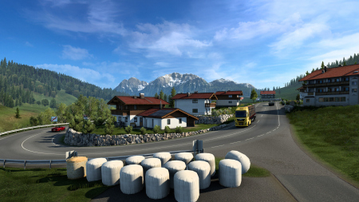
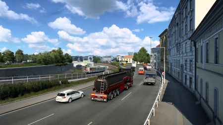
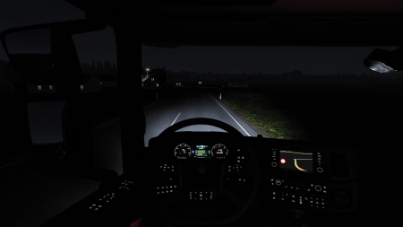
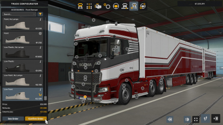

Euro Truck Simulator 2

Дата выхода: 18 окт. 2012
Жанр: Инди, Симуляторы
Разработчик: SCS Software
Издатель: Excalibur Publishing
Платформа: PC
Тип издания: Repack
Язык интерфейса: Русский, Английский, MULTi
Язык озвучки: Отсутствует
Таблетка: Вшита (Goldberg)
Системные требования:
ОС: Windows 7, 8, 10 (64-bit)
Процессор: Dual core 2.4 GHz
Оперативная память: 4 GB ОЗУ
Видеокарта: GeForce GTS 450
Место на диске: 22 GB
Установить Euro Truck Simulator 2
Инструкция по установке:
1. Скачайте установщик .torrent
2. Запустите файл установки в любом удобном Torrent-Клиенте
3. Установите .exe файл и запустите его
4. Следуйте инструкции внутри установщика
Размер файла: 30.77 GB
Описание игры
Euro Truck Simulator 2 предлагает отправиться в путешествие по дорогам Европы, пользователю предстоит стать королем дороги – настоящим дальнобойщиком, который перевозит разнообразные грузы, порой очень ценные и на большие расстояния. Карта маршрута охватывает множество стран – Бельгию, Нидерланды, Италию, Великобританию и множество других. В новом дополнении к ним всем представлена Скандинавия. Помимо новой локации, есть и другие добавления – новые грузы, к уже имеющимся в игре, будет введено еще примерно 80 наименований товаров. Не забыты и полуприцепы – модификации к ним так же входят в дополнение.
Скриншоты из игры
 |
 |
 |
 |